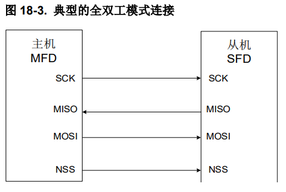
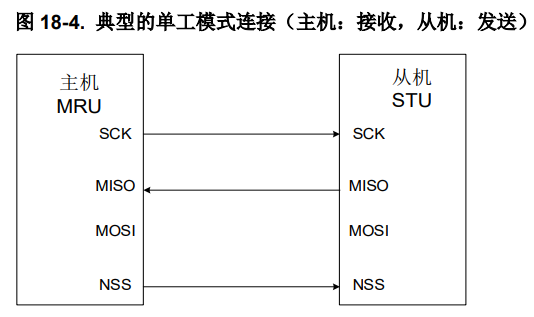
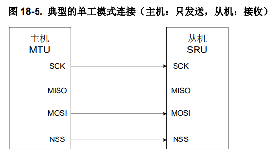
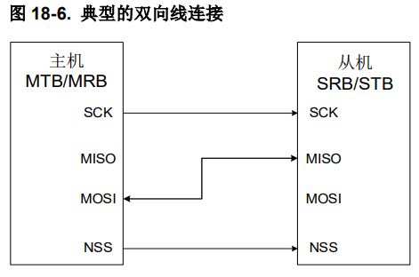
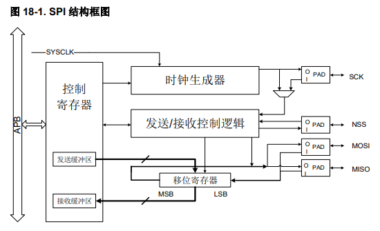
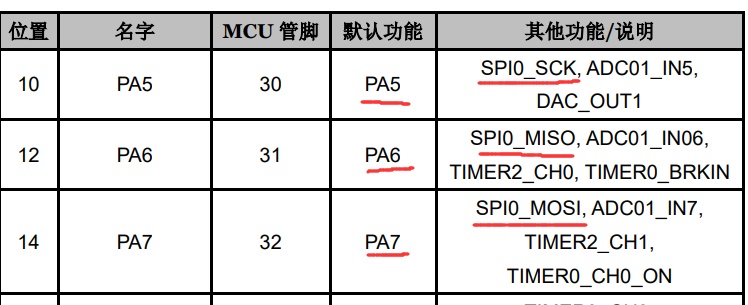
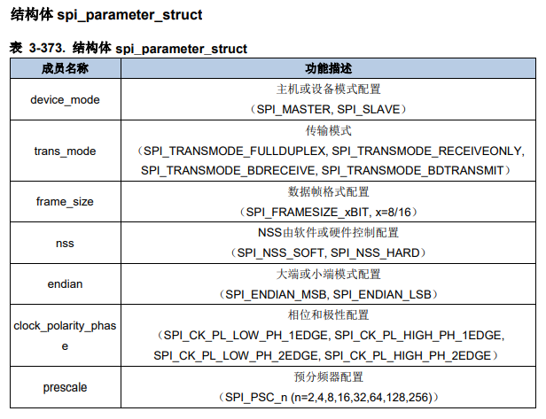

本文参考资料
- 芯来科技RVMCU官方论坛：RVMCU课堂「15」: 手把手教你玩转RVSTAR—SPI总线通信篇__专栏_RISC-V MCU中文社区
- 必看教程，本文将以该示例程序作为基础作进一步解释
- RVSTAR开发板用户指南：531.pdf (rvmcu.com)
- 用于查看基本的GPIO复用信息。
- GD32VF103固件库用户指南：
- 用于查看库函数定义。
- GD32VF103中文手册：11.pdf (rvmcu.com)
- 用于查看、学习各项功能的具体实现。
- RVSTAR开发板原理图：Job1 (rvmcu.com)
- 最详细的引脚功能描述，可以查看到所有你需要的外设信息。例如板载LED，板载按钮的端口号和复用在开发板用户指南中并没有给出，此时需要查看原理图获取信息。
SPI 基本原理
SPI是一种串口通信协议，可以在四种模式下运行：主机发送、主机接收、从机发送、从机接收。
通信方式概述
SPI协议通信需要4根数据线，分别为：
MOSI - Master Output Slave Input主机发送，从机输入MISO - Master Input Slave Output从机发送，主机输入SCLK - Serial Clock时钟信号，由主机产生cs - Chip Select片选信号(从设备使能信号)，由主机控制
SPI通信步骤：
- 主机控制
CS输出低电平选中特定的从机（从机只有在CS为低时才接收信息） - 主机通过
SCLK端口开始产生时钟信号，这个时钟信号将同时作为双发收发数据的时钟信号 - 主机从主机的
MOSI口发出数据到从机的MOSI口 - 从机从从机的
MISO口发出数据到主机的MISO口
由上述可知，MOSI和MISO口并非一定是输入或输出口，而是根据设备是主机还是从机决定的。
有时在一些设备上这些端口的名称表述上可能会有些不同，但是功能上是相同的。
SPI发送没有复杂的数据格式，没有数据报头，没有数据报尾。
如果要发送8位数据，那么发送和接收到的就是简单的8个二进制位。信息发送的同步方式由主机的使能信号和时钟信号控制。
全双工运行模式

在全双工下，需要同时用到四根线，这也是最标准的SPI通信方式，主从双方通过上述通信步骤通信
单工模式



以上各种方式都是只能单向通信，或同时只能单方发送的工作模式，在这种工作模式下只需要用到三根线，但是相比全双工模式会有一定的限制，在使用一些功能单一的从机时可能会用到。
RVSTAR的SPI发送与接收流程（只介绍主机模式）
SPI结构图

注意，软件应当通过读写SPI_DATA寄存器来将数据存入发送缓冲区和读取接收缓冲区，在下文中为方便理解，全部表述为「写发送缓冲区」和「读接收缓冲区」
主机模式发送流程
初始化完成后，SPI使能模块为空闲状态。当软件写一个数据到发送缓冲区后，发送过程开始。
SPI开始发送数据帧时，这个数据帧将加载到移位寄存器中，当移位寄存器中的第一个位（bit）发出后，TBE（发送缓冲区空信号）位置1。TBE置1说明发送缓冲区为空，如果还要继续发送数据，则此时可以向发送缓冲区写数据。
主机接收流程
在最后一个采样时钟边沿后，接收到的数据从移位寄存器存入到接收缓冲区，且RBNE（接收缓冲区非空）位置1。RBNE置1说明接收缓冲区满，软件可以通过读接收缓冲区读取接收到的数据，当软件读取接收缓冲区时，会自动清除RBNE标志位。
在全双工主机模式下，仅当发送缓冲区非空时，硬件才接收下一个数据帧。
注意上文这段话非常重要，意思是说SPI在全双工通信时，如果想要接收信息，必须要让**发送缓冲区**非空！
如果在后续写程序的时候没有注意这一点会导致读取异常，这一点在官方的示例程序中没有展示，也没有提及。
主机收发流程总结
主机发送信息且不需要接收回复时：
- 检查TBE，等待其为1
- 数据写入
发送缓冲区 - 等待RBNE为1
- 读
接收缓冲区以清空RBNE标志位
主机发送信息且需要接收回复时：
- 检查TBE，等待其为1
- 数据写入
发送缓冲区 - 等待RBNE为1
- 读
接收缓冲区以清空RBNE标志位 - 把一个废数据（或者对从机来说是空指令的数据，一般为0x0）写入
发送缓冲区 - 等待RBNE为1
- 读
接收缓冲区以获得返回数据
注意主机发送一条消息后，如果还要获得回复，那么必须要再写入一条废数据（空指令）来让发送缓冲区非空，从而让硬件能接收返回的数据帧。
RVSTAR使用SPI编程实现
首先说明，SPI并非很复杂的通信协议，所以在掌握了上文描述的SPI通信原理后，完全可以通过简单地GPIO手动控制时钟翻转和数据输入输出，但是这里介绍由芯片提供的SPI功能实现。
外设配置
首先对SPI外设进行配置：
- 开启GPIO时钟
- 开启外设时钟复用
- 开启SPI时钟
- GPIO初始化为复用模式
查阅手册可知PA5/PA6/PA7可以复用为SPI功能

1 | rcu_periph_clock_enable(RCU_GPIOA); // GPIOA时钟 |
SPI配置
SPI配置主要是要配合从机的工作方式，例如从机的信号读取边沿、从机能接受的信息传输速率、从机的大小端接收方式等等。其配置方式由结构体spi_parameter_struct决定，其属性如下：

这里解释几个比较不好理解的参数：
- frame_size
- 数据帧格式，可以为8或16。注意到芯片提供的SPI移位寄存器和输入输出缓冲区都是16位的，如果我们要发送8位的数据，有些人可能会担心是否需要在程序里对数据进行处理，以适配16位。答案是不需要，只要在数据帧格式里设置完成后就不需要程序员再去关心这个了。
- nss
- nss就是上文提到的cs从机片选，软件模式指由程序员手动控制GPIO，或直接拉低来控制从机的cs；硬件模式则是在发送时由硬件自动控制片选信号。软件模式的好处是可以由一组SPI连接多个从机，通过软件片选来选择从机。详细见文档。
- clock_polarity_phase
- endian
- 注意这里指的是移位寄存器先发送高位（MSB）还是低位(LSB)，如果从机希望接收到的第一个bit是高位，那就选择MSB，否则选择LSB
1 | spi_struct_para_init(&spi_init_struct); // 库函数中的结构体初始化函数 |
完整SPI初始化
1 | void spi_config() |
使用SPI发送且不接收回复
1 | int main() |
使用SPI发送且接收回复
1 | // msg: 向从机发送的消息 |
上面是一个「发一个，收一个」的示例，可以看到如果要收一个数据发送缓冲区里要有数据。
也就是说如果你要实现「发n个，收n个」，那么在第k个数据发送时，你也可以同时接收到第k-1个数据的返回，而且在第n个数据发送的同时可以接收到从机第n-1个的返回，所以最后还得在补发一个废数据以接收从机的第n个返回。
结(Tu)语(Cao)
最为嵌入式初学者，使用了较新的国产开发板RVSTAR入门，本身相关的例程就几乎没有，而且官方的SPI示例代码中还出现了SPI全双工只演示发送不演示接收的情况，甚至在不清空缓冲区标志位的情况下还去读缓冲区标志位的不良操作。这些情况结合起来导致我在处理SPI通信——尤其是SPI接收——时走了不少弯路。